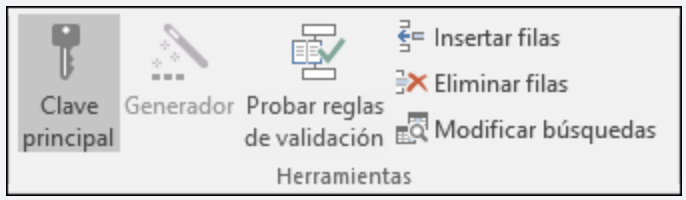
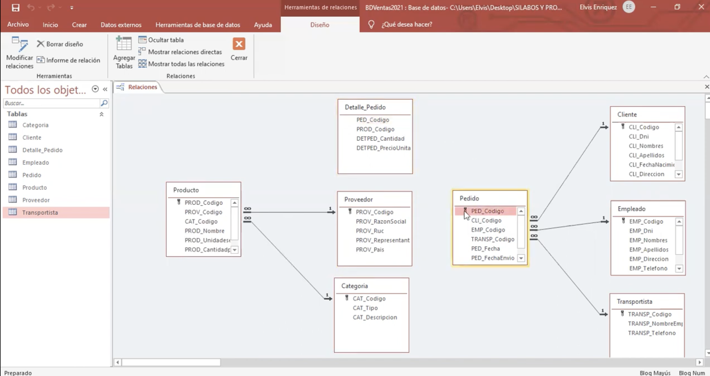
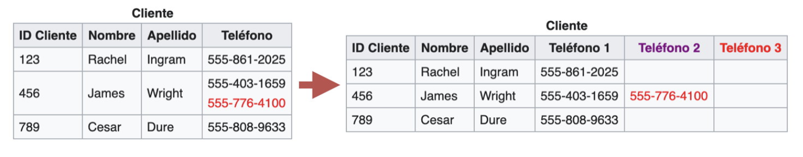

Objetivos
- Conocer el uso de claves primarias y foráneas en el diseño de bases de datos.
- Establecer relaciones adecuadas entre tablas.
- Aplicar principios básicos de normalización.
- Diseñar la estructura de la base de datos del proyecto en Microsoft Access.
1. Claves Primarias y Secundarias
En el diseño de una base de datos es fundamental identificar correctamente cada uno de los datos que se almacenan. Para ello se utilizan las claves primarias y las claves secundarias, que permiten organizar la información y relacionarla de forma coherente.
La clave primaria o principal es un campo que identifica de manera única cada registro dentro de una tabla. Este valor no se repite y no puede quedar vacío, lo que garantiza que cada elemento registrado sea diferente del resto. Por ejemplo, en una base de datos de una biblioteca, cada libro puede identificarse mediante un código único o un número de registro.
La clave secundaria o foránea es un campo que permite relacionar una tabla con otra, ya que hace referencia a la clave primaria de otra tabla. Gracias a las claves foráneas es posible vincular información, como asociar un préstamo a un libro concreto y a una persona usuaria determinada. El uso correcto de estas claves es esencial para mantener la coherencia y fiabilidad de la base de datos.

2. Relación entre tablas
Las relaciones entre tablas permiten conectar la información almacenada en distintas tablas de una base de datos relacional. Estas relaciones facilitan el acceso a los datos y evitan la duplicación innecesaria de información.
Las relaciones más habituales son las relaciones uno a uno y las relaciones uno a muchos. En el contexto de una biblioteca, una relación uno a muchos permite, por ejemplo, que una persona usuaria pueda realizar varios préstamos, mientras que cada préstamo se corresponde con un único libro en un momento determinado.
Establecer correctamente las relaciones entre tablas ayuda a organizar mejor la información y a garantizar que los datos se mantengan actualizados. Durante esta sesión, el alumnado analizará ejemplos reales de entornos administrativos para comprender cómo se aplican estas relaciones en situaciones prácticas.

3. Normalización básica y diseño de la base de datos
La normalización básica es un proceso que permite organizar la información de una base de datos de forma eficiente, evitando la repetición de datos y reduciendo posibles errores. Consiste en distribuir la información en distintas tablas relacionadas en lugar de concentrarla en una sola.
Aplicar la normalización básica facilita el mantenimiento de la base de datos y mejora su funcionamiento. En una biblioteca, por ejemplo, los datos de los libros, de las personas usuarias y de los préstamos se almacenan en tablas diferentes, pero relacionadas entre sí.
En esta sesión, el alumnado trabajará en el diseño de la base de datos del proyecto, decidiendo qué tablas son necesarias, qué campos debe contener cada una y cómo deben relacionarse. Este diseño servirá como base para la creación de la base de datos en Microsoft Access en las siguientes sesiones.

Relaciona
Relaciona cada tarjeta con su pareja
Consejo: Si necesitas ayuda, revisa el glosario de la sesión o consulta los ejemplos antes de volver a intentarlo.
Relaciona cada tarjeta con su pareja
\n\nConsejo: Si necesitas ayuda, revisa el glosario de la sesión o consulta los ejemplos antes de volver a intentarlo.
","showMinimize":false,"itinerary":{"showClue":false,"clueGame":"","percentageClue":40,"showCodeAccess":false,"codeAccess":"","messageCodeAccess":""},"cardsGame":[{"url":"","x":0,"y":0,"author":"","alt":"","audio":"","color":"#000000","backcolor":"#ffffff","eText":"Clave%20Primaria","urlBk":"","xBk":0,"yBk":0,"authorBk":"","altBk":"","audioBk":"","colorBk":"#000000","backcolorBk":"#ffffff","eTextBk":"Identificador%20%C3%BAnico%20de%20cada%20registro%20en%20una%20tabla%20"},{"url":"","x":0,"y":0,"author":"","alt":"","audio":"","color":"#000000","backcolor":"#ffffff","eText":"Clave%20for%C3%A1nea","urlBk":"","xBk":0,"yBk":0,"authorBk":"","altBk":"","audioBk":"","colorBk":"#000000","backcolorBk":"#ffffff","eTextBk":"Campo%20que%20enlaza%20una%20tabla%20con%20otra"},{"url":"","x":0,"y":0,"author":"","alt":"","audio":"","color":"#000000","backcolor":"#ffffff","eText":"Relaci%C3%B3n%201%20a%20muchos","urlBk":"","xBk":0,"yBk":0,"authorBk":"","altBk":"","audioBk":"","colorBk":"#000000","backcolorBk":"#ffffff","eTextBk":"Una%20persona%20usuaria%20puede%20tener%20muchos%20pr%C3%A9stamos."},{"url":"","x":0,"y":0,"author":"","alt":"","audio":"","color":"#000000","backcolor":"#ffffff","eText":"Normalizaci%C3%B3n","urlBk":"","xBk":0,"yBk":0,"authorBk":"","altBk":"","audioBk":"","colorBk":"#000000","backcolorBk":"#ffffff","eTextBk":"Organizar%20datos%20para%20evitar%20duplicidades%20y%20mejorar%20la%20coherencia."}],"isScorm":0,"textButtonScorm":"Guardar la puntuación","repeatActivity":true,"weighted":100,"textAfter":"","version":2,"percentajeCards":100,"type":0,"showSolution":true,"timeShowSolution":3,"time":3,"evaluation":false,"evaluationID":"f0a2f22c-0d16-4cc2-bd9a-8242fb8f6b36","id":"idevice-1777629438747-ib52ov82d","msgs":{"msgSubmit":"Enviar","msgClue":"¡Genial! La pista es:","msgCodeAccess":"Código de acceso","msgPlayStart":"Pulsa aquí para jugar","msgScore":"Puntuación","msgErrors":"Errores","msgHits":"Aciertos","msgMinimize":"Minimizar","msgMaximize":"Maximizar","msgFullScreen":"Pantalla Completa","msgExitFullScreen":"Salir del modo pantalla completa","msgNoImage":"Pregunta sin imágenes","msgEndGameScore":"Comience la partida antes de guardar la puntuación.","msgScoreScorm":"La puntuación no se puede guardar porque esta página no forma parte de un paquete SCORM.","msgOnlySaveScore":"¡Solo puede guardar la puntuación una vez!","msgOnlySave":"Solo puede guardar una vez","msgInformation":"Información","msgYouScore":"Su puntuación","msgAuthor":"Autoría","msgOnlySaveAuto":"Su puntuación se guardará después de cada pregunta. Solo puede jugar una vez.","msgSaveAuto":"Su puntuación se guardará automáticamente después de cada pregunta.","msgSeveralScore":"Puede guardar la puntuación tantas veces como quiera","msgYouLastScore":"La última puntuación guardada es","msgActityComply":"Ya ha realizado esta actividad.","msgPlaySeveralTimes":"Puede realizar esta actividad cuantas veces quiera","msgClose":"Cerrar","msgAudio":"Audio","msgNumQuestions":"Número de tarjetas","msgTryAgain":"Necesitas al menos %s% de respuestas correctas para obtener la información. Inténtalo de nuevo.","msgEndGameM":"Has completado el juego. Tu puntuación es %s.","msgUncompletedActivity":"Actividad no completada","msgSuccessfulActivity":"Actividad superada. Puntuación: %s","msgUnsuccessfulActivity":"Actividad no superada. Puntuación: %s","msgTypeGame":"Relaciona","msgCheck":"Comprobar","msgRestart":"Reiniciar"}}